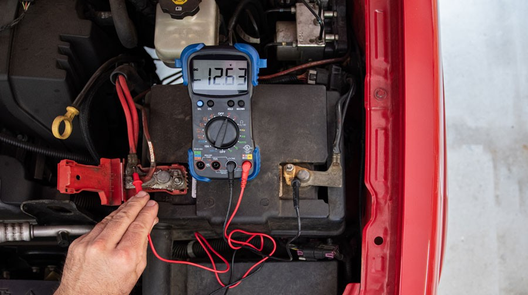

Lithium batteries power our modern lives, from smartphones to laptops and power tools. However, they can face issues like reduced capacity and lifespan. This article explores common lithium battery repair methods and essential precautions to ensure safe and effective maintenance.
Common Repair Methods:
- Temperature Treatment: Placing batteries in a low-temperature environment can temporarily reduce internal chemical activity and leakage. However, extreme temperatures can damage the battery.
- Deep Discharge: Discharging the battery completely and then recharging it can sometimes help restore capacity. However, over-discharging can be harmful.
- Clean Contacts: Oxidation or dirt on battery contacts can hinder performance. Cleaning them with an eraser or soft cloth can improve conductivity.
- Freezing Method: Some users report that freezing batteries can help restore performance. However, this method should be used cautiously to avoid damage from extreme temperatures.
- Overcharge/Discharge Cycles: Controlled overcharge and discharge cycles can sometimes rejuvenate batteries. However, excessive overcharge or discharge can lead to damage.
- Hydration and Repair: For batteries with excessive water loss, electrolyte replenishment may be possible, but it requires specific knowledge and skills.
- Battery Pack Inspection and Repair: Inspecting and replacing faulty cells within a battery pack can improve overall performance.
- Sulfation Removal: Professional removal of lead sulfate from battery crystals can enhance durability.
- Slow Charging: Using a low-power charger can help extend battery life.

Precautions:
- Understand Risks: Some repair methods can cause damage or safety hazards. Proceed with caution and research potential consequences.
- Consult Professionals: If you're unsure about a repair method, consult a professional or follow the battery manufacturer's guidelines.
- Prioritize Safety: Always follow safety regulations to prevent short circuits, overheating, or fires.
- Limited Effectiveness: Repair methods may offer temporary improvements but cannot completely reverse battery aging.
- Consider New Technologies: Stay informed about emerging technologies that might offer more effective battery restoration solutions.
Conclusion:
While various repair methods can help address issues with lithium batteries, it's important to understand their limitations and potential risks. Proper battery care, including regular maintenance and safe charging practices, is crucial for extending battery life. As technology advances, we can expect new and innovative solutions to improve the performance and longevity of lithium batteries.